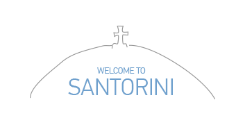

Your best holiday friend
PICKUPS
From the moment you step foot in Santorini ’til the moment you return home, we are here to offer you the most personalized and complete travel experience possible. Think of us as your dedicated travel assistants.
Airport Pickup
First, book a pickup at the same price as a taxi from the line but get all the extras that you can only find at Welcome.
Local English-speaking drivers
Flat, pre-paid fee equivalent to a taxi from the line
Flight monitoring for delays
24/7 Customer support + free cancellation
Essential Products
After booking a pickup you will have the ability to pre-order essential travel products. These are delivered to you upon pickup, inside your free Welcome Bag.
Sim cards & Wifi hotspots
Skip the line attraction tickets
Local souvenir boxes
A free Welcome Bag and local map

We are rated excellent on TRIPADVISOR